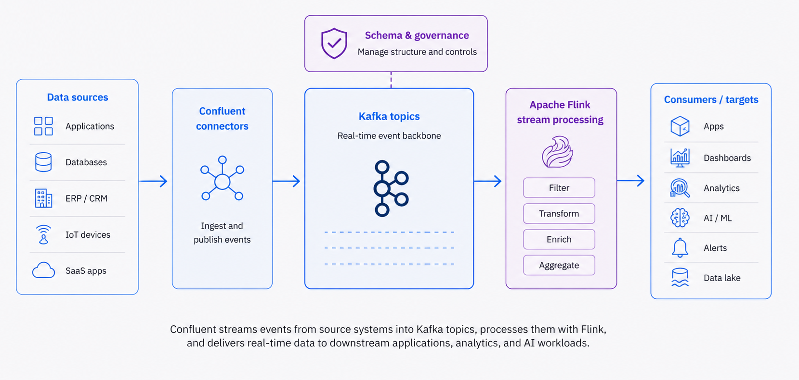

Data Streaming with Confluent¶
Enterprise-grade real-time data streaming powered by Confluent Platform - the complete data streaming solution built by the original creators of Apache Kafka.
GitHub Repository
The complete source code and examples are available in the GitHub repository:
Overview¶
This building block delivers enterprise-grade data streaming capabilities through Confluent Platform, the most complete data streaming solution built by the original creators of Apache Kafka. Confluent provides real-time event ingestion and stream processing for operational and analytical use cases, enabling continuous data flow into AI pipelines with enterprise security, scalability, and advanced management features.

Confluent Platform offers the most advanced Kafka distribution with cloud-native capabilities, comprehensive tooling, and enterprise features that go far beyond open-source Apache Kafka.
Key Features¶
- Real-time Event Ingestion: Capture and process events as they occur with millisecond latency
- Advanced Stream Processing: Process data streams with ksqlDB, Kafka Streams, and Flink
- Cloud-Native Architecture: Fully managed Confluent Cloud or self-managed Platform
- Complete Data Streaming: Most comprehensive Kafka distribution with 200+ connectors
- Schema Management: Built-in Schema Registry for data governance
- Scalable Architecture: Handle high-volume data streams efficiently across distributed systems
- Low Latency: Minimize delay between data generation and availability
- Enterprise Security: End-to-end encryption, RBAC, and compliance features
- DevOps Automation: Infrastructure as Code and automated operations
Confluent Platform - Complete Data Streaming by Kafka Creators¶
Confluent Platform is the most complete data streaming platform, built by the original creators of Apache Kafka, offering enterprise features and cloud-native capabilities.
Why Choose Confluent?¶
Built by Kafka Creators¶
- Created by the team that built Apache Kafka at LinkedIn
- Most advanced Kafka distribution with latest features
- Industry-leading expertise and innovation
- Largest Kafka community and ecosystem
Confluent Cloud - Fully Managed¶
- Cloud-native, serverless Kafka service
- Available on AWS, Azure, and Google Cloud
- Elastic scaling with pay-as-you-go pricing
- 99.99% uptime SLA with multi-region support
Advanced Stream Processing¶
- ksqlDB: SQL-based stream processing for real-time applications
- Kafka Streams: Native stream processing library
- Flink on Confluent: Advanced stateful stream processing
- Real-time data transformations and aggregations
Data Governance and Integration¶
- Schema Registry: Centralized schema management with versioning
- Kafka Connect: 200+ pre-built connectors for data integration
- Stream Lineage: Track data flow across your organization
- Data Quality Rules: Ensure data integrity in real-time
Enterprise Operations¶
- Control Center: Advanced monitoring and management UI
- Cluster Linking: Multi-datacenter replication
- Tiered Storage: Cost-effective long-term data retention
- Self-Balancing Clusters: Automated partition rebalancing
DevOps and Automation¶
- Infrastructure as Code with Terraform
- GitOps workflows for configuration management
- Automated cluster provisioning and scaling
- CI/CD integration for stream processing applications
Security¶
- End-to-end encryption (TLS/SSL)
- RBAC (Role-Based Access Control)
- SASL/SCRAM, OAuth, and mTLS authentication
- Audit logs and compliance reporting
Use Cases¶
- Real-time analytics and data warehousing
- Event-driven microservices
- Customer 360 and personalization
- Fraud detection and security monitoring
- IoT data processing at scale
Apache Kafka - Open Source Foundation¶
Apache Kafka is the foundational distributed streaming platform that powers Confluent Platform.
Core Capabilities¶
- High-throughput, low-latency message broker
- Distributed, fault-tolerant architecture
- Horizontal scalability to handle trillions of events
- Persistent storage with configurable retention
- Producer and consumer APIs for all major languages
- Open-source with active community support
Use Cases¶
Real-Time Analytics¶
Process streaming data for immediate insights and decision-making with sub-second latency.
Event-Driven Applications¶
Build responsive applications that react to events in real-time using event-driven architectures.
Data Pipeline Integration¶
Feed real-time data into AI/ML pipelines for continuous model updates and real-time predictions.
Operational Monitoring¶
Monitor systems and applications with real-time data streams for proactive issue detection.
Change Data Capture (CDC)¶
Capture and stream database changes in real-time for data synchronization and replication.
Log Aggregation¶
Collect and aggregate logs from distributed systems for centralized analysis.
Architecture¶
The Data Streaming building block integrates with multiple platforms and services:
Core Streaming Platforms¶
- Apache Kafka: Foundation for distributed streaming
- IBM Event Streams: Enterprise Kafka on IBM Cloud
- Confluent Platform: Advanced Kafka with enterprise features
- Confluent Cloud: Fully managed cloud-native Kafka
Integration Points¶
- IBM watsonx.data: For data lake integration and storage
- IBM watsonx.ai: For AI model integration and real-time inference
- Kafka Connect: For connecting to various data sources and sinks
- Schema Registry: For data governance and schema evolution
Stream Processing¶
- Kafka Streams: Native stream processing library
- ksqlDB: SQL-based stream processing
- Apache Flink: Advanced stream processing (optional)
Getting Started¶
-
Clone the repository:
git clone https://github.com/ibm-self-serve-assets/building-blocks.git cd building-blocks/data/integration/data-streaming -
Choose your streaming platform:
- Apache Kafka (open source)
- IBM Event Streams (IBM Cloud)
- Confluent Platform (self-managed)
-
Confluent Cloud (fully managed)
-
Follow the setup instructions in the README for your chosen platform
-
Configure your streaming sources and destinations
-
Deploy and monitor your streaming pipelines
Products and Services¶
IBM Products¶
- IBM Event Streams: Enterprise Kafka service on IBM Cloud
- IBM watsonx.data: Open lakehouse platform for data storage
- IBM watsonx.ai: AI platform for model deployment
Open Source¶
- Apache Kafka: Distributed streaming platform
- Kafka Streams: Stream processing library
- Kafka Connect: Data integration framework
Confluent¶
- Confluent Platform: Complete data streaming platform
- Confluent Cloud: Fully managed cloud-native Kafka
- ksqlDB: Stream processing database
- Schema Registry: Schema management service
Best Practices¶
Performance Optimization¶
- Configure appropriate partition counts for parallelism
- Tune producer and consumer settings for throughput
- Use compression for network efficiency
- Monitor lag and adjust consumer groups
Data Governance¶
- Implement schema registry for data contracts
- Use topic naming conventions
- Apply access controls and authentication
- Enable audit logging
Reliability¶
- Configure replication factor for fault tolerance
- Implement proper error handling and retry logic
- Monitor cluster health and performance
- Plan for disaster recovery
Related Building Blocks¶
- Data Pipeline (AI Generated): Automated data pipeline generation
- Data Quality: Enhance streaming data quality
- Vector Search: Real-time vector search capabilities
- Text2SQL: Query streaming data with natural language